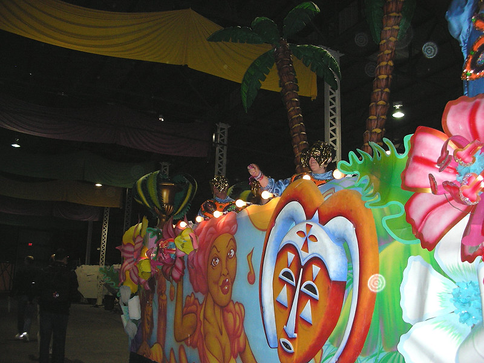

Johnnie and Oberta Baker's Photo Album Gallery Previous Next
|

Inexpensive strings of beads and toys have been thrown from floats to parade-goers since at least the late 19th century. Until the 1960s, the most common form was multi-colored strings of glass beads.. These were supplanted by less expensive and more durable plastic beads, and more recently by mettalic ones. |